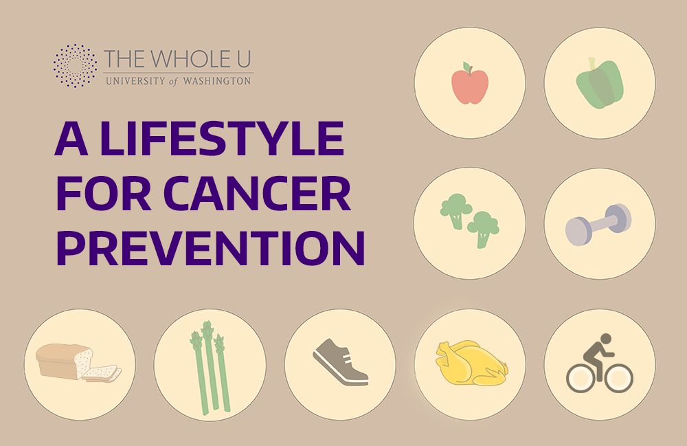
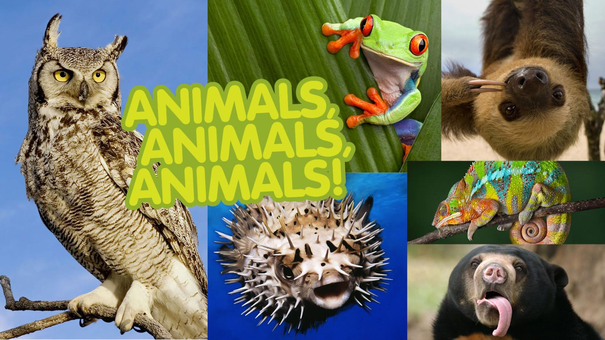
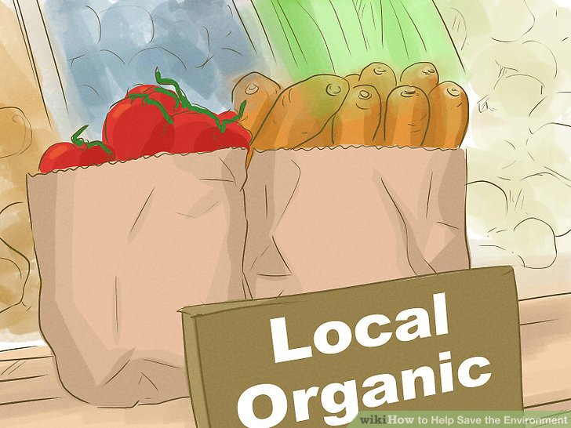
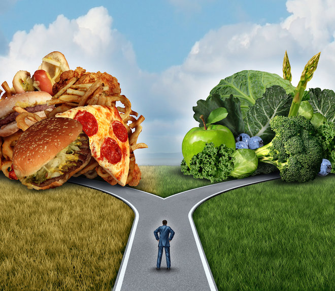
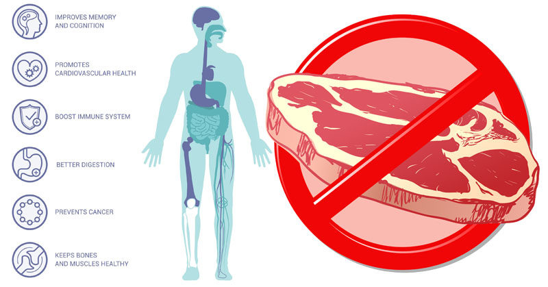

Top 10 Reasons Not to Eat Meat
While there is ample reason for indignation at the 100 million tons of grain used for biofuels, more than seven times as much grain (760 million tons) is fed to farmed animals so that people can eat meat.
1. Reduce Your Risk of Cancer
According to the Physicians Committee for Responsible Medicine, "Vegetarians are about 40 percent less likely to get cancer than non-vegetarians, regardless of other risks such as smoking, body size, and socioeconomic status".
2. Be nice to animals
On today's factory farms, animals are crammed by the thousands into filthy windowless sheds, wire cages, gestation crates and other confinement systems. These animals will never raise families, root in the soil, build nests or do anything that is natural and important to them.
3. Save the Environment
A recent United Nations report entitled Livestock's Long Shadow concludes that eating meat is "one of the top two or three most significant contributors to the most serious environmental problems, at every scale from local to global". The report finds that eating meat causes almost 40 per cent more greenhouse-gas emissions than all the cars, trucks, ships and planes in the world combined.
4. Prolong Your Life
Vegetarians live six to 10 years longer on average than meat-eaters do. Healthy vegetarian diets support a lifetime of good health and provide protection against numerous diseases and the three biggest killers – heart disease, cancer and strokes.
5. Reduce Your Risk of Cancer
According to the Physicians Committee for Responsible Medicine, "Vegetarians are about 40 percent less likely to get cancer than non-vegetarians, regardless of other risks such as smoking, body size, and socioeconomic status".
Sources: Peta
Image:david wolf